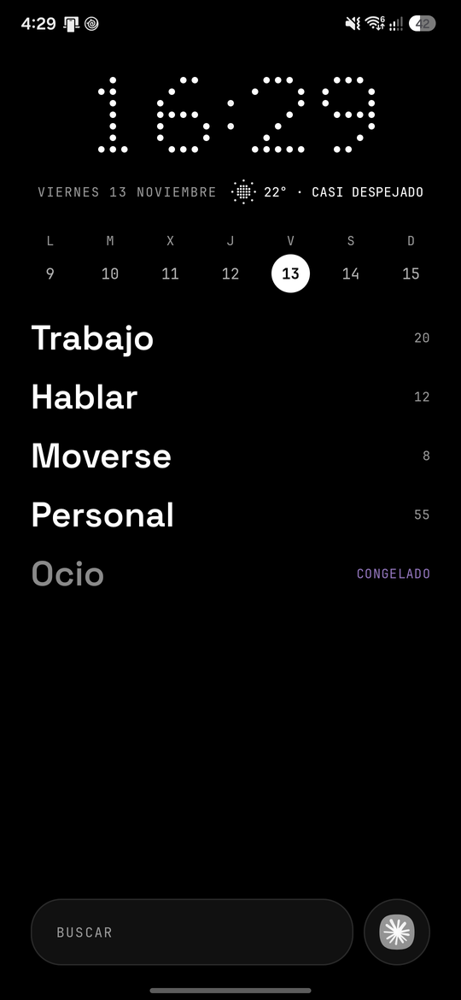

El launcher que no quiere que lo uses
Una pantalla negra, un reloj de puntos y tus apps ordenadas por para qué las usas. Las de ocio esperan congeladas hasta que pidas tiempo. Launcher minimalista para Android, gratis y de código abierto para uso no comercial.
Tu móvil está diseñado para que no lo sueltes
Un inicio lleno de iconos de colores, insignias rojas y apps de redes a un toque. Abres el móvil para mirar la hora y acabas veinte minutos después en algo que no tenías pensado.
Usos sustituye ese inicio por una pantalla negra con reloj, semana y búsqueda. Sin dock, sin fondo, sin colores. Las apps de ocio no se abren a la primera: tienes un presupuesto diario y una espera antes de entrar.
Todo lo que necesitas, nada de lo que te distrae
Secciones por uso
Trabajo, Hablar, Moverse, Personal, Ocio y Otros. Las apps se clasifican solas y puedes reasignarlas cuando quieras.
Mosaico editable
Cada sección se despliega en un mosaico. Mantén pulsada una pieza para moverla, cambiar su tamaño o quitarla.
Ocio congelado
Presupuesto diario de minutos, espera antes de abrir y bloqueo real mediante el servicio de accesibilidad: no basta con buscar la app por otro lado.
Búsqueda y botón de IA
Apps, direcciones web y búsqueda en el buscador que elijas, más un botón para preguntar a tu asistente de IA favorito.
Widgets
Un panel con widgets de Android en la misma rejilla, en escala de grises si quieres.
Noticias por lecturas
Feeds RSS/Atom. Abrir un artículo nuevo gasta una lectura de un cubo que se rellena con el tiempo.
Avisos discretos
Un punto o un borde indica qué app tiene notificaciones. Solo lee de qué app, nunca su contenido.
Iconos opcionales
Sin iconos por defecto. Puedes activarlos en monocromo o en color.
Tiempo
Tiempo y próximo evento opcionales en la pantalla de inicio. Apagados por defecto.
100 % personalizable
Columnas, filas, tamaños, reloj (puntos, digital, texto, analógico), acento y gestos de toque.
Español e inglés
Interfaz completa en los dos idiomas, con selector propio.
Así se ve



Para estudiar, trabajar o desconectar
Estudiar
Las redes y los vídeos esperan a que acabes. Tu agenda y tus apps de estudio, a un toque.
Trabajar
Correo, mensajes y mapas a mano; el resto, fuera de la vista hasta que lo necesites.
Desconectar
Recupera el hábito de usar el móvil con intención: pides tiempo, lo usas y se acaba.
Sin analíticas, sin cuentas, sin anuncios
Usos no recoge datos ni te pide registro. La red solo se usa para tus feeds de noticias, las sugerencias de búsqueda y el tiempo (si los activas) y para comprobar si hay una versión nueva en GitHub. Los avisos de notificación leen solo de qué app vienen, nunca el contenido.
Cómo instalar
- Descarga. Baja el APK desde el botón de arriba o desde Releases.
- Permite la instalación. Autoriza instalar desde fuentes desconocidas para tu navegador o gestor de archivos y abre el APK.
- Elige Usos como inicio. Pulsa el botón Inicio y selecciona Usos como app de inicio.
- Concede los permisos. La guía inicial pide acceso de uso y el servicio de accesibilidad que bloquea las apps congeladas. En Android 13+ puede hacer falta Permitir ajustes restringidos en la info de la app.
Preguntas frecuentes
¿Es gratis?
Sí. Usos es gratis para uso personal y no comercial.
¿Por qué no está en Play Store?
Necesita un servicio de accesibilidad para bloquear apps y se distribuye directamente desde GitHub Releases. Es un proyecto personal de código abierto.
¿Se actualiza solo?
Comprueba la última release de GitHub como máximo una vez cada 24 h al abrirlo. Descarga el APK, verifica que tiene la misma firma y lo instala con el instalador del sistema. Puedes desactivarlo en Ajustes. Actualizar no borra tu configuración.
¿Funciona en mi móvil?
Requiere Android 13 o superior. No depende de apps de ningún fabricante.
¿Puedo traducirlo?
Sí. Hay una guía paso a paso en TRANSLATING.md y las contribuciones son bienvenidas.
¿Puedo usarlo comercialmente?
No. La licencia es PolyForm Noncommercial 1.0.0: libre para uso personal y no comercial.